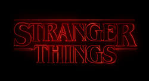

- Impuros
- Stranger things 
- You
- One piece
deixar que os fatos sejam fatos naturalmente,
sem que sejam forjados para acontecer,
deixar que os olhos vejam os pequenos detalhes lentamente,
deixar que as cruzes que lhe sircudam,
estejam sempre inertes, como móveis inofencivos,
para lhe servir quando for preciso,
e nunca lhe causar danos sejam eles: morais,
físicos ou psicológicos
Chico Science